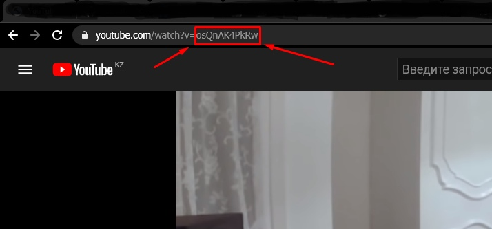
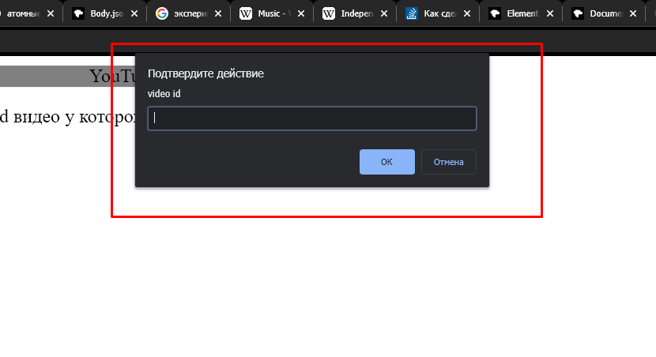
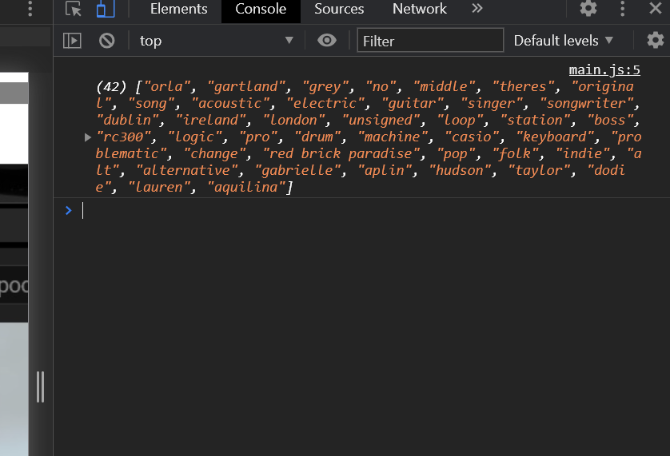
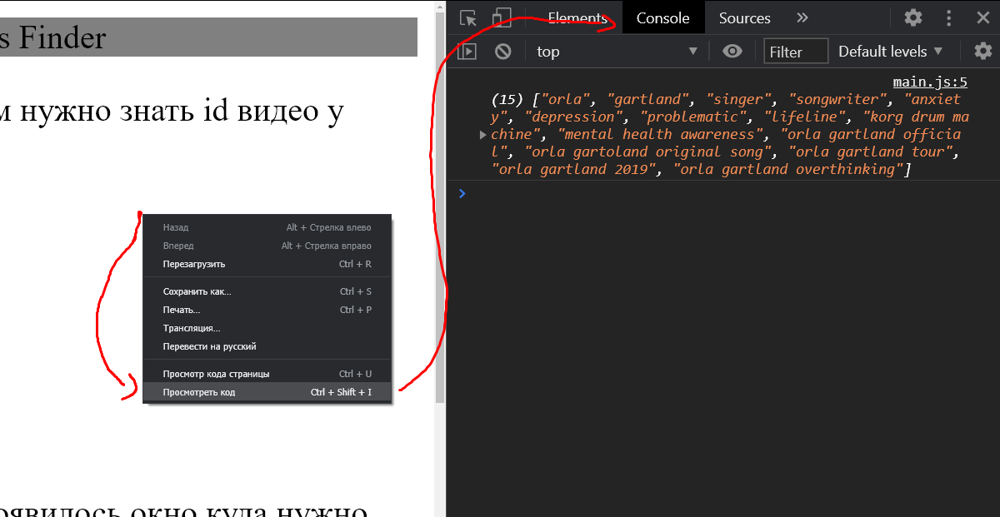

1)Чтобы использовать эту программу вам нужно знать id видео у которого вы хотете найти теги
2)Перезагрузите страницу чтобы у вас появилось окно куда нужно вводить id
3)Готово! Если вы сделали всё правильно, то в консоли появился список тегов CTRL+SHIFT+I ЧТОБЫ ОТКРЫТЬ КОНСИЛЬ или шаг №4
4) чтобы открыть консоль: Правой кпонкой мыши по странице и просмотреть код. В открывшемся окне перейти во вкладку `Console`
